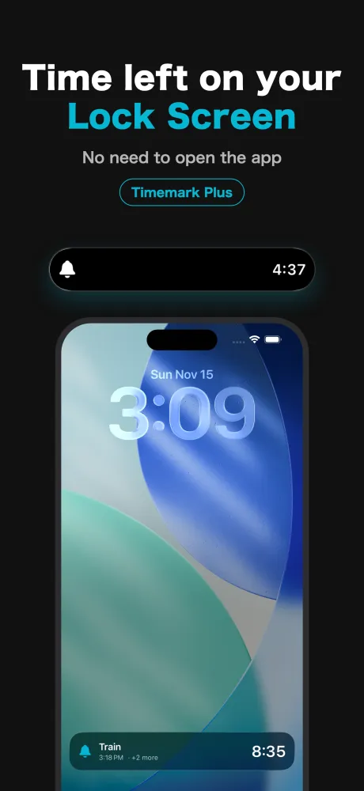
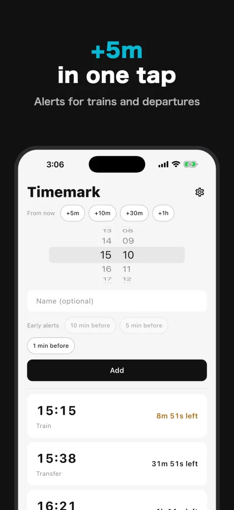
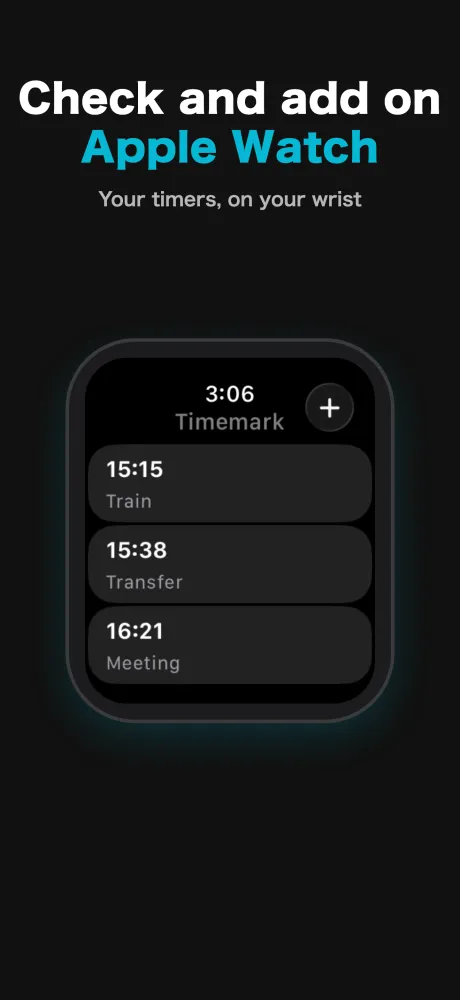

Get alerted in X minutes,
with one tap.
Set times for trains, departures, and meetings in seconds.
Get it free on the App Store


When to use it
How long until the next train?
- When
- Your connecting train leaves in 10 minutes, and you don't want to lose track on the platform
- Tap
- Favorites "Transfer" → "+10m" → "5 min before" → "Add"
- What happens
- Alerts 5 minutes before and at departure. Time left shows in the list and on the Lock Screen
Parking meter alert in 1 hour
- When
- You want to get back to your car before the parking fee goes up
- Tap
- Favorites "Parking" → "+1h" → "Add"
- What happens
- Alert in 1 hour. Check the time left in the list
Alert 5 minutes before a meeting
- When
- You want a heads-up just before your next meeting starts
- Tap
- Favorites "Meeting" → "+10m" → "5 min before" → "Add"
- What happens
- An alert 5 minutes before: "Meeting in 5 minutes"
Pasta and laundry timers
- When
- You want to set "in X minutes" for cooking or laundry without stopping what you're doing
- Tap
- Favorites "Pasta" → "+5m" → "Add"
- What happens
- An alert when time's up. Check the time left on Apple Watch too
01Quick entry
Tap +5m, +10m, +30m, or +1h. The time is set, and you get an alert when it arrives.
02Time left on your Lock Screen
Your next timer and the time left appear on the Lock Screen and in the Dynamic Island. No need to open the app.
Timemark Plus03Apple Watch
Check your timers on your wrist. Add and delete them right from your Watch.
FAQ
What is Timemark?
Timemark is an iPhone app focused on "in X minutes." Tap +5m, +10m, +30m, or +1h, and it alerts you when the time comes.
Is it free?
Yes. Timemark Plus, a one-time purchase, adds unlimited timers, early alerts 10, 5, and 1 minute before, the Lock Screen countdown, and Favorites. Pay once, no subscription.
Can I see the time left on my Lock Screen?
With Timemark Plus, your next timer and the time left appear on the Lock Screen and in the Dynamic Island, so you can check without opening the app.
Does it work with Apple Watch?
Yes. Check the time left on your wrist, and add or delete timers right from your Watch.
When can I use it?
Anytime you need a quick "in X minutes" alert: your connecting train, the parking meter, 5 minutes before a meeting, pasta, or the end of a laundry cycle.